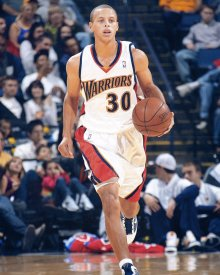

2009-10赛季
新秀赛季
新秀赛季(15张)
2009年NBA选秀，斯蒂芬·库里在首轮第7顺位被金州勇士队选中。 [10]
2009年10月29日，在勇士与火箭的比赛中，斯蒂芬·库里首发出场，36分钟12投7中拿到14分2篮板7次助攻和4次抢断，完成NBA首秀。
2010年1月28日，NBA公布全明星新秀挑战赛18人大名单，斯蒂芬·库里入选一年级队。 [11]
2010年2月2日，NBA官方公布了1月份月最佳新秀名单，斯蒂芬·库里当选西部月最佳新秀。在1月份的比赛当中，库里场均出场39.5分钟排在所有新秀的首位，场均19.1分排在第二位，场均5.1次助攻排在第二位，场均4.4个篮板排在第七位，场均2次抢断排在首位。
[12]
2010年2月11日，在勇士与快船的比赛中，斯蒂芬·库里全场得到36分10篮板和13次助攻，刷新职业生涯单场得分和助攻纪录，收获生涯首次三双，这是2009届新秀的第一个三双，并成为NBA历史上第六个在新秀年就拿下30+10+10的球员。
[13-14]
2010年4月8日，在勇士与森林狼的比赛中，斯蒂芬·库里得到27分、14次助攻、8个篮板球和7次抢断的准四双数据，同时成就了主教练老尼尔森执教历史上的第1333场胜利。 [15]
2011全明星技巧赛
2011全明星技巧赛(17张)
2010年5月1日，NBA官方公布了2009-10赛季新秀最佳阵容名单，斯蒂芬·库里全票入选第一阵容。 [16]
2010-11赛季
2011年2月2日，NBA官方公布2011年全明星新秀挑战赛大名单，斯蒂芬·库里入选二年级队。 [17]
2011年2月20日，在全明星周末技巧挑战赛中，斯蒂芬·库里用时28.2秒，战胜拉塞尔·威斯布鲁克等对手，最终夺冠。 [18]
2011-12赛季
2011-12赛季，斯蒂芬·库里持续受到伤病困扰，仅出战了26场比赛，场均只有14.7分、5.3次助攻和3.4个篮板。在常规赛还未结束之前即宣布赛季报销。 [19]
2012-13赛季
2012年11月1日，勇士队官方宣布和斯蒂芬·库里就续约事宜达成一致。新合同为期4年价值4400万美元，2013夏生效，2017夏到期。 [20-21]
2013年2月28日，勇士客场挑战尼克斯，斯蒂芬·库里得到创生涯个人单场新高的54分，并贡献6篮板、7助攻和3抢断。此外，库里全场一共命中了11记三分球，与联盟纪录仅相差1球。 [22]
2013年4月18日，在勇士与开拓者的比赛，斯蒂芬·库里全场投中4个三分球，2012-13赛季三分球命中数累计达到272个，超越雷·阿伦（2005-06赛季269个）成为联盟历史单赛季三分王。 [23-24]
2012-13赛季季后赛

2012-13赛季季后赛(2张)
2013年4月20日，斯蒂芬·库里当选4月份西部最佳球员。库里在4月份帮助勇士拿到5胜3负的战绩，在西部球员中，库里的场均25.4分位居第四，8.1助攻位居第三，2.14抢断则是第六。 [25]
2013年5月7日，季后赛西区半决赛第1场勇士对阵马刺，斯蒂芬·库里首发出战57分56秒，在两次加时中他只休息了4秒，35投18中得到44分、11次助攻和4个篮板，其中第三节得到22分。1973~2013年40年季后赛历史中，单场得到这样数据的除库里外只有1990年5月14日的迈克尔·乔丹，后者面对76人砍下45分、6个篮板和11次助攻。
[26]
2013-14赛季
斯蒂芬·库里
斯蒂芬·库里(2张)
2013年11月5日，在勇士与76人的比赛中，斯蒂芬·库里得到18分、12次助攻和10个篮板的三双数据，另外贡献5次抢断，帮助勇士队以110-90战胜对手。 [27]
2013年12月8日，在勇士与灰熊的比赛中，斯蒂芬·库里全场贡献22分、15助攻和6篮板，追平职业生涯单场助攻纪录。另外，库里凭借本场命中的两记3分，超越贾森·理查德森，以701个三分命中数成为勇士队队史三分王。 [28]
2013年12月28日，勇士主场大胜太阳，斯蒂芬·库里出场22分钟，得到14分13篮板和16次助攻，刷新职业生涯单场助攻纪录。 [29]
2014年1月24日，NBA公布了2014年新奥尔良全明星首发阵容，斯蒂芬·库里首次当选全明星即进入西部首发阵容。 [30]
2014年2月17日，斯蒂芬·库里在新奥尔良全明星赛的处子秀中，首发出场，得到12分11助攻，成为勇士队历史上第一个在全明星赛上奉献得分和助攻两双的球员。 [31]
2014年3月1日，勇士客场大胜尼克斯，斯蒂芬·库里三节砍下27分11篮板11助攻，收获职业生涯第4次三双。 [32-33]
2014年4月12日，在勇士战胜湖人的比赛中，斯蒂芬·库里全场得到30分、10个篮板和12次助攻，收获职业生涯第5次三双，并帮助勇士队提前锁定季后赛席位。 [34]
2014年4月19日，斯蒂芬·库里当选4月份西部月最佳球员。库里4月场均得26.4分（联盟第五位）、9.9次助攻（联盟首位）和2.83次抢断（联盟第二）。库里8场比赛当中3场比赛砍下30+，1场比赛砍下40+，5场比赛助攻次数上双。
[35]
2014年6月5日，NBA官方公布了2013-14赛季最佳阵容，斯蒂芬·库里入选最佳阵容第二阵容。 [36]